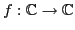

Next: Successive differentiation Up: Application: Newton's method Previous: Analysis Contents Index
For complex functions , however, Newton's method can be directly applied to find their zeros. For many complex functions, the boundary of the set (also known as the basin of attraction) of all starting values that cause the method to converge to a particular zero is a fractal6.13
For example, the function
,
, has five roots,
equally spaced around the unit circle in the complex plane.
If  is a starting point which converges to the root at
is a starting point which converges to the root at  , color
, color  yellow.
Repeat this using four other colors (blue, red, green, purple)
for the other four roots of .
The resulting image is in Figure 6.14.
yellow.
Repeat this using four other colors (blue, red, green, purple)
for the other four roots of .
The resulting image is in Figure 6.14.